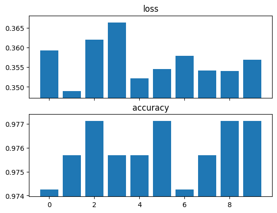

classifier = resnet34()
body = cut_model_by_name(classifier, 'avgpool')
test(body, 'avgpool', hasattr)
assert not hasattr(body, 'fc')Utils
as_percentage
as_percentage (x, ndigits=2)
cut_model_by_name
cut_model_by_name (model, cut)
MLP
MLP (logits:Optional[int], hidden_depth=5, hidden_width=512, features_dim=None)
A Multilayer Perceptron comprized of linear layers with ReLU activations.
| Type | Default | Details | |
|---|---|---|---|
| logits | typing.Optional[int] | Number of logits. pass None to not include a logits layer after the hidden layers |
|
| hidden_depth | int | 5 | Number of hidden layers |
| hidden_width | int | 512 | Number of neurons in each hidden layer |
| features_dim | NoneType | None | Number of neurons in the last hidden layer. Pass None to use the same value as the other hidden layers |
Threshold
Threshold ()
Classifies 1D inputs into 2 classes, based on whether they surpass a threshold or not
threshold = Threshold()
with torch.no_grad():
threshold.t[0] = 3
test_eq(threshold(torch.arange(10)).argmax(1), torch.tensor([1]*3+[0]*7))Since this is such a simple model, we can fit it to data without iterative optimization:
Threshold.fit
Threshold.fit (x, y)
Picks a threshold that maximizes the empirical accuracy
threshold = Threshold()
x = torch.randint(high=10, size=(100,))
chosen_threshold, _ = threshold.fit(x, x < 3)
test_close(chosen_threshold, 3, eps=1)Experiments
Sometimes we want to test a certain procedure (e.g. training a model) multiple times, examine the distribution of the resulting stats. For example, we might want to train and test the same model on different train-test splits, or even the same split to examine the effect of training stochasticity on the results.
While tools like TensorBoard can be used for an in-depth analysis of the whole process (e.g. loss-by-epoch graphs), sometimes we just want to note the distribution of the end results.
Averaging over multiple runs also gives more stable results, for example cross-validation gives a more accurate estimate to the model’s performance than training once.
RepeatedExperiment
RepeatedExperiment (model:torch.nn.modules.module.Module, data:List[fastai.data.core.Datasets], seed:int=0)
Runs multiple independent iterations of the same procedure, and combines the results
| Type | Default | Details | |
|---|---|---|---|
| model | Module | The model to be used in each iteration. Parameter are reset to their initial values before each iteration | |
| data | typing.List[fastai.data.core.Datasets] | A list of Datasets, each representing a different iteration. A Dataloaders of the current Datasets is available via self.dls |
|
| seed | int | 0 | Used for reproducibility of results. Use None to avoid reproducibility |
ExperimentalResults
ExperimentalResults (stats:List[Any])
Provides various ways of examining the results of a RepeatedExperiment
RepeatedExperiment.run
RepeatedExperiment.run ()
Runs the experiment, returning the results as an ExperimentalResults
For example, we can train a linear classifier for MNIST multiple times and check distribution of accuracies:
class LinearMNIST(RepeatedExperiment):
def iteration(self):
learn = Learner(self.dls, self.model, metrics=accuracy)
learn.fit(1)
return dict(zip(['loss', 'accuracy'], learn.validate()))
res = LinearMNIST(model=nn.Sequential(nn.Flatten(), nn.Linear(28*28, 2)),
data=[TinyMNIST() for _ in range(10)]).run()res.stats[{'loss': 0.3591866195201874, 'accuracy': 0.9742489457130432},
{'loss': 0.34896886348724365, 'accuracy': 0.9756795167922974},
{'loss': 0.3619726896286011, 'accuracy': 0.9771101474761963},
{'loss': 0.3663684129714966, 'accuracy': 0.9756795167922974},
{'loss': 0.35216033458709717, 'accuracy': 0.9756795167922974},
{'loss': 0.35451024770736694, 'accuracy': 0.9771101474761963},
{'loss': 0.35790905356407166, 'accuracy': 0.9742489457130432},
{'loss': 0.3541954755783081, 'accuracy': 0.9756795167922974},
{'loss': 0.3539672791957855, 'accuracy': 0.9771101474761963},
{'loss': 0.3568763732910156, 'accuracy': 0.9771101474761963}]ExperimentalResults.collated_stats
ExperimentalResults.collated_stats ()
res.collated_stats{'loss': array([0.35918662, 0.34896886, 0.36197269, 0.36636841, 0.35216033,
0.35451025, 0.35790905, 0.35419548, 0.35396728, 0.35687637]),
'accuracy': array([0.97424895, 0.97567952, 0.97711015, 0.97567952, 0.97567952,
0.97711015, 0.97424895, 0.97567952, 0.97711015, 0.97711015])}ExperimentalResults.plot_stats
ExperimentalResults.plot_stats ()
res.plot_stats()
ExperimentalResults.stat_means
ExperimentalResults.stat_means ()
res.stat_means{'loss': 0.35661153495311737, 'accuracy': 0.9759656548500061}ExperimentalResults.stat_stds
ExperimentalResults.stat_stds ()
res.stat_stds{'loss': 0.004772754486396994, 'accuracy': 0.0010705668573123257}